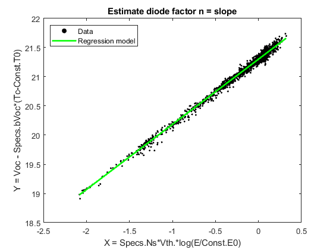
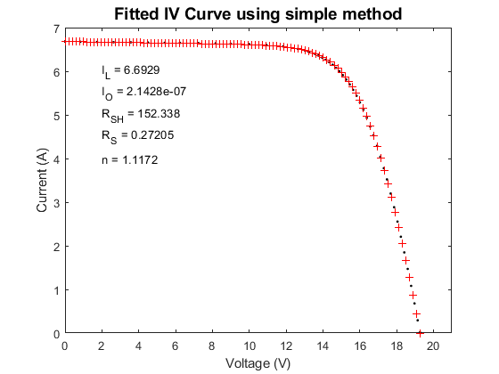

pvl_est_diode_params_simple
PVL_EST_SINGLE_DIODE_PARAM_SIMPLE fits the single diode equation to data for a single IV curve.
Contents
Syntax
[IL, I0, Rsh, Rs] = pvl_est_single_diode_param_simple(IVCurve, nNsVth)
Description:
pvl_est_single_diode_param_simple uses a sequential technique described in [1] to fit the single diode equation to data for a single IV curve. The method here is a simplification of that found in [2] and coded in est_single_diode_param. The diode factor n is not determined in this function. A value for n can be found by regression between Voc and log(Ee) for a range of effective irradiance Ee, as coded in e.g. pvl_desoto_parameter_estimation.
Inputs:
- IVCurve - A structure array with the following fields:
- * IVCurve.Isc - short circuit current in amperes.
- * IVCurve.Voc - open circuit voltage in volts.
- * IVCurve.Imp - current at maximum power point in amperes.
- * IVCurve.Vmp - voltage at maximum power point in volts.
- * IVCurve.Pmp - power at maximum power point in watts.
- * IVCurve.V - vector of voltage in volts.
- * IVCurve.I - vector of current in amperes.
- * IVCurve.Ee - Effective irradiance (W/m2).
- * IVCurve.Tc - cell temperature (C).
- nNsVth - the product n (diode factor) x Ns (cells in series) x Vth (thermal voltage per cell) for both IV curves.
Outputs:
- IL - the light current (A) for the IV curve
- I0 - the dark current (A) for the IV curve
- Rsh - the shunt resistance (ohm) for the IV curve.
- Rs - the series resistance (ohm) for the IV curve.
Example
clearvars % load IV curve data for a 36 cell Mitsubishi cSi module load 'Desoto_demo.mat' % Build structure for constants Const.E0 = 1000; % W/m2 Const.T0 = 25; % C Const.k = 1.38066E-23; % J/K Const.q = 1.60218E-19; % c % Determine value for diode factor n determined by regression of Voc onto % log(effective irradiance) % Extract structure content to column vectors Ee = [IVCurves.Ee]'; Tc = [IVCurves.Tc]'; Voc = [IVCurves.Voc]'; % Cell thermal voltage Vth = Const.k/Const.q*(Tc+273.15); X = Specs.Ns*Vth.*log(Ee/Const.E0); Y = Voc - Specs.bVoc*(Tc-Const.T0); beta = pvl_robustfit(X,Y,true); Voc0 = beta(1); n = beta(2); figure scatter(X, Y, 5, 'k', 'filled') hold on; x = (min(X): (max(X)-min(X))/100: max(X)); plot(x, Voc0+n*x, 'g', 'LineWidth',2) title('Estimate diode factor n = slope') xlabel('X = Specs.Ns*Vth.*log(E/Const.E0)') ylabel('Y = Voc - Specs.bVoc*(Tc-Const.T0)') legend('Data', 'Regression model', 'location', 'NorthWest') box on % Randomly selected IV curve i = 63; % Clean up measured IV curve data [I, V] = pvl_rectify_IV_curve(IVCurves(i).I, IVCurves(i).V, IVCurves(i).Voc, IVCurves(i).Isc); IVCurves(i).V = V; IVCurves(i).I = I; % Estimate remaining 4 parameters for the IV curve [IL, I0, Rsh, Rs] = ... pvl_est_diode_params_simple(IVCurves(i), n*Specs.Ns*Vth(i)); % Compute IV curve associated with the 5 parameters Result = pvl_singlediode(IL, I0, Rs, Rsh, n*Specs.Ns*Vth(i), 100); figure plot(IVCurves(i).V,IVCurves(i).I,'k.') hold on plot(Result.V,Result.I,'r+') xlabel('Voltage (V)') ylabel('Current (A)') title('Fitted IV Curve using simple method','FontSize',14) xlim([0 21]) ylim([0 7]) text(2,6,['I_L = ' num2str(IL)]); text(2,5.5,['I_O = ' num2str(I0)]); text(2,5,['R_{SH} = ' num2str(Rsh)]); text(2,4.5,['R_S = ' num2str(Rs)]); text(2,4,['n = ' num2str(n)]); 
References:
- [1] C. Hansen and B. King, "Determining series resistance for equivalent circuit models of a PV module", in 45th IEEE Photovoltaic Specialist Conference, Waikoloa, HI, 2018.
- [2] C. Hansen, Parameter Estimation for Single Diode Models of Photovoltaic Modules, Sandia National Laboratories Report SAND2015-2065%
See also
pvl_est_single_diode_params, pvl_desoto_parameter_estimation
Copyright 2018 Sandia National Laboratories